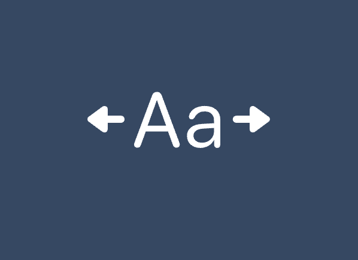

Responsive type scales with composable CSS utilities
With the help of calc(), clamp(), and CSS vars, we can create composable, responsive, and fluid type scales that smoothly adapts to viewport and container widths.
Hiding empty elements with CSS: empty and :has()
You might be used to toggling classes on elements to handle state styles. What if we could just write CSS that reflected the state of the DOM?
Selecting previous siblings with CSS :has()
Selecting a previous sibling was for long impossible, but is now a breeze with the has() pseudo-class